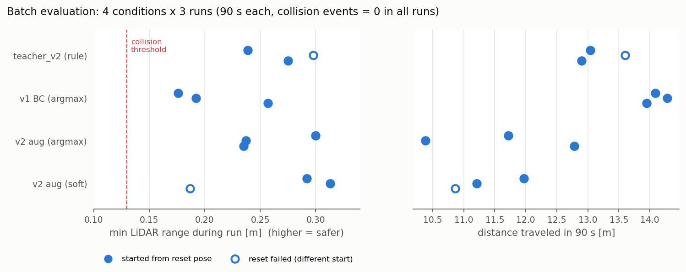
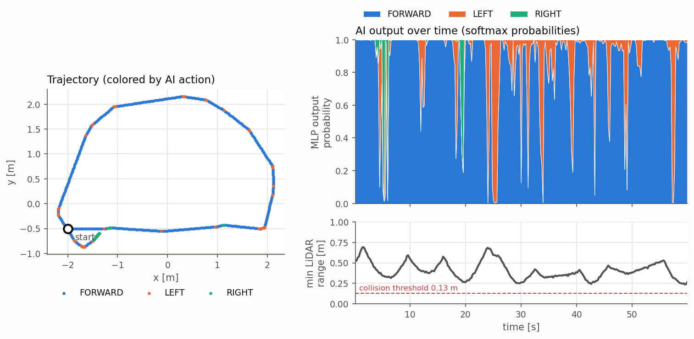

Physical AI 応用1講座 最終課題 説明資料 ／ ROS 2 Humble・Gazebo Classic 11・TurtleBot3 Burger・PyTorch
コード: https://github.com/2life2021/tb3-ai-navigator ／ 動画: YouTube（omnicampusで提出）
TurtleBot3 が LiDAR（/scan）の距離情報だけを使い、ニューラルネットワーク（MLP）の推論結果で「前進・左旋回・右旋回」を選び、/cmd_vel に速度指令を出して、障害物のある環境（turtlebot3_world）を衝突せずに走り続けることをタスクとしました。
if文で直接ロボットを動かすのではなく、ルールで書いた「熟練者（教師）」の振る舞いを、シミュレーション内で自動収集したデータから学習（模倣学習）させ、走行中は学習済みモデルだけで判断させます。さらに、本当に動くかを閉ループ（ロボットを実際に走らせて）で定量評価し、失敗を分析して改善するサイクルを回したことが本作品の中心です。
実世界では、掃除ロボットや倉庫の搬送ロボットの「ぶつからずに動き続ける」という基本機能に相当します。ルールを人手で調整し続けるかわりに、データからセンサ→行動の対応を学ぶ構成にしておくと、人間の操作ログや強化学習など、教師を別のものに差し替えて発展させることができます。
Gazebo (turtlebot3_world) │ /scan LaserScan 360本, 約5Hz ▼ ai_driver.py (ROS 2 ノード) 前処理: inf→3.5m, 5°ごと72セクタの最小距離, ÷3.5 で 0〜1 に正規化 MLP: 72 → 128 → 128 → 3 (ReLU, softmax) …… P(前進), P(左), P(右) 制御: argmax（最大確率の行動） または soft（確率で速度を重み付け平均） │ /cmd_vel Twist 前進 v=0.18m/s ／ 左右 v=0.02m/s, ω=±0.9rad/s ▼ Gazebo 上の TurtleBot3 Burger ai_monitor.py: LiDARと確率を可視化（制御には関与しない）
| 項目 | 内容 |
|---|---|
| モデル | 多層パーセプトロン（PyTorch）。入力72 → 隠れ層128×2（ReLU） → 出力3 |
| 入力 | LiDAR 360本を5°ごとの72セクタに分け、各セクタの最小距離を0〜1に正規化したベクトル |
| 出力 | 3行動（FORWARD / LEFT / RIGHT）の確率 |
| 学習方法 | 模倣学習（Behavior Cloning）＝教師あり3クラス分類。クラス重み付き交差エントロピー、Adam |
| 学習データ | Gazebo で自動走行しながら収集した（生LiDAR 360本, 行動ラベル）3,206組。学習用は左右反転とノイズ付加で約25,000組に拡張 |
| 正解ラベル | ルールベースの教師（teacher_action_v2）で自動生成。前方±30°が0.55m以上かつ斜め前30〜75°が0.35m以上空いていれば前進（ただし真横75〜105°に0.22m未満の壁があればその壁から離れる方向へ旋回）。それ以外は、左右20〜100°で平均距離が大きい方へ旋回 |
| 推論 | /scan を受信するたびに CPU で1回推論（1回あたり1ms未満）。走行中の行動は MLP の出力だけで決める |
教師v1でデータ1,176件を収集し、24セクタ（15°刻み）のMLPを学習しました（検証精度91%）。120秒の走行で衝突0回、18.95m を走行し、合格ラインの動作を確認しました。
模倣学習の弱点（AIが自分で操作すると、学習データにない状態に入ってしまう＝共変量シフト）への対策として、DAggerを導入しました。AI自身が走ったときの状態に教師ラベルを付けて追加学習する手法です。ところが、検証精度は91.1%→93.9%に上がったのに、初期位置をそろえた120秒の走行で衝突イベントが0回から6回に増えました（各1回）。
観測事実: 6回のうち4回は左下の柱付近、2回は外周の壁付近で起きました。直前のログには、前進確率≈1.0のまま最小距離が縮んでいく場面と、その場旋回中に最小距離が縮む場面がありました。また、教師v1は前方±60°しか見ておらず、真横の障害物を判断に使っていません（コードで確認できる事実）。
仮説（未検証）: 教師v1が「横の障害物に近い状態での前進」を正解としていたため、DAggerで障害物近くの状態データが増えたことで、その判断が強化された。ただし、ログには最小距離の方向を記録していないためこの仮説は直接確かめられず、1回ずつの比較なので偶然の可能性も残ります。
この分析から「モデルよりも教師（ラベル）の質を疑うべき」と判断し、真横の確認を加えた教師v2を作りました。
収集時に生LiDAR値も保存していたので、教師を改良しても再走行せずに全データへラベルを付け直せます（train.py --relabel）。
15°刻みのセクタでは、教師の角度境界（30°・75°・105°）とセクタ境界がずれるため、5°刻み72セクタに変更しました。さらに、左右反転と距離ノイズ（σ=2cm）を加えたスキャンを教師で再ラベルして、学習データを約10倍に拡張しました（検証は拡張していない元データで行う）。
最大確率の行動を選ぶ方式（argmax）に加えて、行動確率で速度を重み付け平均する soft 制御も実装しました。AIの確信度が低い（確率が割れている）ときは自動的に減速し、動きも滑らかになります。また、AIが見ているLiDARと出力確率をリアルタイムに表示するモニターを作り、動画で「AIが何を見て、どう判断したか」がわかるようにしました。
各試行の開始時に /reset_world を呼んで初期位置に戻し（12回中2回は失敗。後述の監査を参照）、各条件を複数回走らせて自動記録しました。
評価指標: 走行距離＝/odom の積算値。最接近距離＝走行中の LiDAR 最小値（大きいほど安全）。衝突イベント＝LiDAR最小距離が0.13m未満になった回数（接触センサではない）。教師一致率＝AIの行動が教師ルールと一致した割合。
| 条件 | 試行 | 走行距離 [m] | 最接近距離 [m] 平均（最小） | 衝突イベント | 教師一致率（対v2） |
|---|---|---|---|---|---|
| 教師v2（ルールで走行） | 3 | 13.2 ± 0.3 | 0.271 (0.239) | 0 | 1.00 |
| v1 BC (argmax) | 3 | 14.1 ± 0.1 | 0.208 (0.176) | 0 | 0.79 ※1 |
| v2 aug (argmax)［最終採用］ | 3 | 11.6 ± 1.0 | 0.257 (0.235) | 0 | 0.80 |
| v2 aug (soft) | 3 | 11.3 ± 0.5 | 0.264 (0.187) | 0 | 0.83 |
※1 v1は教師v1で学習したモデルなので、教師v2との一致率は参考値です。
※2 教師v2の2回目とsoftの1回目は /reset_world が効かず、別の位置から始まっています（図の白抜きの点）。初期位置が正しかった回だけで集計すると、教師v2は最接近距離の平均0.257m（最小0.239m）、softは平均0.303m（最小0.292m）です。

全12回とも衝突イベントは0回でした。最終採用モデルは、v1に比べて障害物との距離を大きく保ちます（最接近距離の最小値 0.176m→0.235m）。その代わり旋回が増えて、走行距離は短くなりました（14.1m→11.6m）。事後分析では、全試行で0.25m四方のマスを36〜64個訪れており、立ち往生（5秒間の移動が0.10m未満）は最大4.4秒でした。
| 項目 | 確認結果 |
|---|---|
| 初期位置・向き | 12回中10回は同じ位置から開始し、2回はリセットに失敗した。コードがリセットの成否を確認していなかった。向きはログに記録しておらず、検証できない |
| 試行の多様性 | 同じ初期位置で3回なので、違いはLiDARノイズ（σ=1cm）とタイミングの揺らぎだけ。初期位置への依存性は評価できておらず、統計的な有意差も言えない |
| 衝突の定義 | LiDAR最小距離が0.13m未満になった回数。接触センサではないため、LiDARの死角での接触は検出できない |
| 評価コードと提出コード | 評価の後に追加したのは可視化用トピックの送信だけで、行動の決定と速度指令の計算は同一。提出コードでは短い動作確認だけを行った |
| 改善案（未実施） | リセット後の位置確認と再試行、yawの記録、複数の初期位置×5回以上、接触センサによる判定、提出コードでの再評価 |
| モデル | 教師 | 特徴量 | データ | 検証精度 |
|---|---|---|---|---|
| v1 | v1 | 24セクタ | 1,176 | 91.1% |
| v1 + DAgger | v1 | 24セクタ | 2,039 | 93.9% |
| v2 (24セクタ) | v2 | 24セクタ | 3,206（再ラベル） | 87.1% |
| v2 (72セクタ) | v2 | 72セクタ | 3,206 | 88.3% |
| v2 aug | v2 | 72セクタ | 3,206＋拡張 | 87.2% |
v1とv2では教師が異なるため、精度を直接比較することはできません。検証精度が最も高い「v1+DAgger」が走行では最も悪かったことから、オフラインの精度だけでは走行性能を判断できず、閉ループ評価が不可欠だとわかります。

左: 軌跡（点の色＝AIが選んだ行動）。右上: MLPが出力した各行動の確率の時間変化（最初の60秒）。右下: LiDARの最小距離。
ros2 launch turtlebot3_gazebo turtlebot3_world.launch.py # TURTLEBOT3_MODEL=burger python3 scripts/ai_driver.py --model models/policy_v2_aug.pt --reset # AI自律走行 python3 scripts/ai_monitor.py # AI視点モニター（任意）
データ収集・学習・一括評価の手順は README を参照してください。